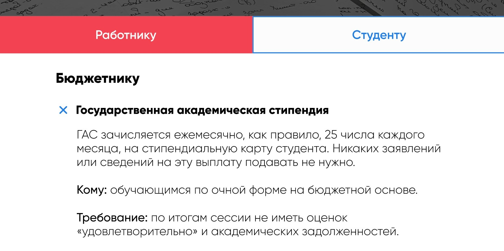
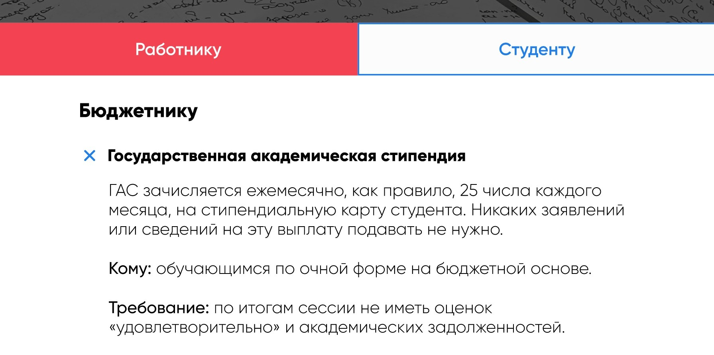

Справочник завершен
16 марта 2025
С 10 февраля 2025 года по 15 марта 2025 года участники команды дизайнеров разрабатывали макет дизайна справочника для студентов и сотрудников. Справочник вышел довольно информативным, и, главное, стильным.
16 марта 2025
С 10 февраля 2025 года по 15 марта 2025 года участники команды дизайнеров разрабатывали макет дизайна справочника для студентов и сотрудников. Справочник вышел довольно информативным, и, главное, стильным.
3 февраля 2025

3 февраля 2025 года прошла первая очная встреча участников проекта. В течение занятия были обсуждены цели на учебный семестр, назначены задачи и должности. Команда начала свою работу!